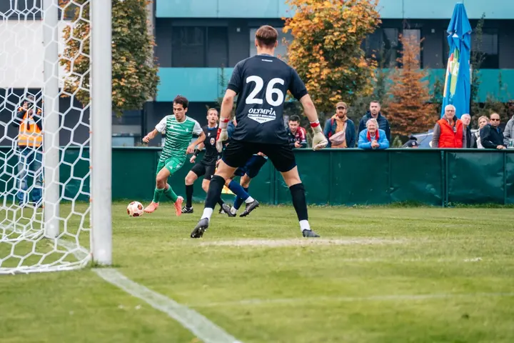

jedna
Svatební focení
Na svatbě nechci jen mačkat spoušť, ale být součástí vašeho dne, pomoct s drobnostmi a uklidnit nervozitu. Vybrat si můžete z balíčků Mini (3 hodiny), Classic (8 hodin) a Premium (12 hodin).

Svatební fotograf · Praha, celá Česká republika

Jmenuji se Ondřej Šimáček, ale klidně mi říkejte Ondra. Fotím hlavně svatby, k tomu rodiny a fotbalové zápasy. Na vaší svatbě nechci jen mačkat spoušť, chci být součástí dne a pomoct vám ho prožít naplno.
Více o mně
Co fotím
jedna
Na svatbě nechci jen mačkat spoušť, ale být součástí vašeho dne, pomoct s drobnostmi a uklidnit nervozitu. Vybrat si můžete z balíčků Mini (3 hodiny), Classic (8 hodin) a Premium (12 hodin).
dvě
Uvolněné focení venku v přírodě i doma, se smíchem, hrou a třeba i obřím medvědem. Hodí se i pro chvíle, kdy čekáte další miminko.
tři
Fotím fotbalové zápasy od malých hřišť až po plné stadiony. Akce, souboje o míč i atmosféru na tribunách.

Být součástí vašeho dne, ne jen u spouště

Za objektivem
Ahoj, já jsem Ondra, svatební fotograf a parťák v jednom. Nejde mi jen o to mačkat spoušť. Mnohem víc mi záleží na tom, abych byl součástí vašeho dne a pomohl vám ho prožít naplno.
Snažím se splynout s atmosférou a zachytit ty nejdůležitější momenty, od ranních příprav až po večerní zábavu. Když je potřeba, jsem vám oporou: pomůžu s drobností, uklidním nervozitu nebo nenápadně zachytím emoce, kterých si v tu chvíli ani nevšimnete.
Kromě svateb fotím rodiny a sport, hlavně fotbal. Za svatbou rád přijedu kamkoliv po České republice, doprava je v ceně každého balíčku.
Ondřej
Pošlete mi zprávu přes formulář a vyberte balíček, který vás láká. Odpovídám vždy do 24 hodin.
Potkáme se osobně nebo online a probereme vaše představy. Pokud máte plán dne, ať už na papíře, nebo jen v hlavě, moc pomůže.
Jsem s vámi od příprav přes obřad až po večerní zábavu, podle toho, jaký balíček si vyberete. Fotím nenápadně a pomáhám tam, kde je to potřeba.
Do 14 dnů dostanete fotky v online galerii, ze které si můžete rovnou objednat tisk. Zálohu fotek držím 2 roky.
Portfolio
Fotografie jsou ilustrační
Otázky
Záleží na vašich plánech, ale často fotím už během příprav. Dál fotím obřad, hostinu i závěrečnou zábavu. Je to opravdu jen na vás.
Běžně je předávám digitálně přes online galerii, ze které si snadno objednáte tisk. Když budete chtít, dodám fotky na dřevěném flashdisku nebo vyrobím fotoknihu.
Cestování pro mě není problém, přijedu kamkoliv budete potřebovat. Doprava po celé ČR je v ceně všech balíčků.
Ano, záloha se platí po podepsání smlouvy a činí 50 % domluvené částky.